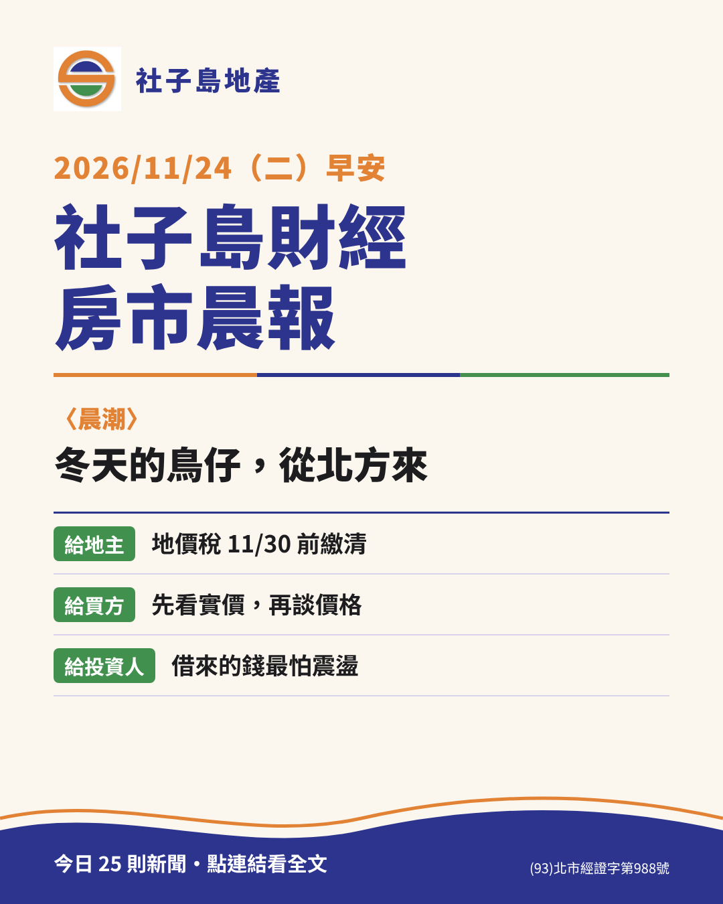

2026/11/24 (二) 早安
社子島財經房市晨報｜冬天的鳥仔，從北方來
台股一個多月跌掉兩成多，全台房屋抵押設定卻增加了 5.7%，有人把房子押給銀行去買股票。今天的〈今日一題〉，說清楚「以房養股」對地主有什麼風險，社子島的土地如果設了抵押，未來區段徵收又怎麼處理。北士科工地火警，市府已勒令停工開罰；昨晚美股大漲，輝達單日漲三成。週二早上，25 則新聞，點標題就能讀原文。
〈潮汐表〉今天的三道潮水
- 給地主地價稅 11 月 30 日截止，這週記得繳；土地拿去押貸買股之前，先想清楚最壞情況。
- 給買方屋主惜售、待售量減少，議價要有耐心；先看實價登錄，再談價格。
- 給投資人美股一天大漲，不代表風險過去；借來的錢，最怕在震盪裡被迫賣出。
〈晨潮〉島嘴曆
冬天的鳥仔，從北方來
昨天在淡水河邊，阿公看著一群鳥停在對岸泥灘上，問我們：「這些鳥仔，到底是對佗位來的？啥物時陣來、啥物時陣走？咱社子島，佗位看會著？」阿公，您小時候聽人講「是對北爿真遠的所在飛來的」，這句話沒有錯。
先說從哪裡來。每年天冷才出現的鳥，叫做「冬候鳥」。牠們夏天在北方繁殖，秋天往南飛，到比較溫暖、食物比較多的地方過冬。社子島夾在淡水河和基隆河之間，退潮時露出大片泥灘，有螃蟹、小魚、貝類可以吃，對這些長途旅行的鳥來說，就像路邊一間好吃的飯店。
再說什麼時候來、什麼時候走。報導引述社子島濕地的生態監測：小水鴨大約從 10 月下旬來，一直待到隔年 3 月上旬，已經是這裡穩定的過冬客；秋冬到初春，還常看到從北方來的大白鷺和成群的雁鴨。最熱鬧的是 3 到 4 月，往北回家的候鳥在這裡集合、補充體力。前年 11、12 月，社子島濕地也幾次看到稀有的黑面琵鷺，牠們退潮時在潮溝、潮池裡用扁扁的嘴巴左右掃著找東西吃。
到社子島看冬候鳥，三件事先知道
- 什麼時候｜小水鴨約 10 月下旬到隔年 3 月上旬；3～4 月北返候鳥最熱鬧
- 在哪裡｜島頭一帶的社子島濕地；退潮時泥灘露出，鳥最多
- 怎麼看｜保持距離、不餵食、輕聲；週末可找解說志工
最後，在社子島哪裡看得到？答案就在島頭一帶的「社子島濕地」。有調查從 2018 年起每月記錄，三個樣區一共記到 83 種鳥。看鳥有三個小撇步：挑退潮的時候去，泥灘露出來，鳥才會下來覓食；保持距離、不要餵食、不要大聲；週末有解說志工在現場，有時候可以借望遠鏡看。今天鋒面來、北部轉涼又有雨，想去的話，等週四回暖、出太陽再出門。
阿公小時候看到的鳥，和今天孫子看到的，可能是同一群鳥的好幾代子孫，年年記得回到這座島。未來社子島的開發計畫裡，濕地和河岸怎麼留下來，我們會繼續陪您一起看。往下滑，是今天的新聞；最後在〈廟口泡茶區〉，阿公在等您。
——社子島地產團隊
〈今日一題〉
把房子押給銀行去買股票，地主要想清楚什麼？
先看數字。依內政部資料，今年前三季全國建物抵押權設定 46.2 萬棟，比去年同期增加 5.7%，七都中台北市年增 12% 最高；同一時間，買賣移轉棟數反而微減。房仲另統計，同時背房貸和信貸的「雙貸族」一年多了約 3 萬人，信貸金額年增約兩成。市場把這個現象叫做「以房養股」。
風險在哪裡？股票會漲也會跌，房貸、信貸的利息卻每個月都要繳。台股從 10 月高點一路修正，報導指出跌幅一度超過兩成五；如果股票賠錢、收入又不穩，最壞的情況是繳不出貸款，房子被拍賣。
跟社子島地主有什麼關係？土地一樣可以拿去設定抵押。未來社子島辦區段徵收，地主如果申請領回抵價地，原來土地上的抵押權依土地徵收條例，可以和銀行一起申請轉設定到領回的抵價地上；如果領現金補償，就要先處理銀行的債權。土地上有沒有抵押、欠銀行多少，會直接影響您能怎麼選。
我們的建議很簡單：土地是傳家的本，不要拿去追短線。真的需要資金，先把利息、還款年限和最壞情況算清楚；手上土地已經有抵押的地主，也可以先把貸款狀況整理好，到時候選抵價地或現金才不會手忙腳亂。
資料：ETtoday房產雲 11/23 引述內政部統計、自由財經 11/23 雙貸族報導、工商時報 11/24 股災報導；抵押權轉載依土地徵收條例第 41 條。實際辦理以主管機關與承貸銀行說明為準，本文為本團隊意見，不構成投資或法律建議。
主商圈：社子島・北士科・關渡洲美平原1 則
北士科工地火警後續：北市建管處認定工地未設妥防火措施，對承造、監造各罰 9 萬元並勒令停工，須提出火災原因調查、改善計畫與結構安全鑑定才能復工；業主表示會委託鑑定單位檢測結構。社子島區段徵收計畫仍在內政部審議，這兩天沒有新的官方進度
大台北：台北市・新北市・基隆3 則
北市建商買不到地，法人轉向整棟收購老樓；松江路一處都更孤島，八位持分人整合成完整產權後求售，地主整合的難處一覽無遺；新北土城新案開價衝上 8 字頭，和板橋亞東仍有約三成價差
其他縣市：桃園・新竹・台中・高雄（離台北由近到遠）6 則
桃園人口增加最快的區域，總價差距可達數百萬到上千萬；新竹園區首購族鎖定關埔兩房；台中冠德還想再買對街大地；高雄房市冷，買房頭期款卻比五年前多了 113 萬
稅務與法律實務1 則
今年地價稅繳納期限是 11 月 30 日（星期一），逾期每 3 天加收 1% 滯納金；共同繼承還沒分割的土地，可以申請按應有部分分單繳納
土地・工業地產1 則
AI 產業擴廠，工業地仍是今年最熱的土地交易；桃園龜山一筆約 4,957 坪的乙種工業區廠房土地公開標售
全台房市・政策・資金8 則
股災會不會拖垮房市？房仲統計前十次股災，有五次災後隔年買氣反而增加；全台待售二手屋連三個月減少，屋主不急著降價；另一面，房屋抵押設定年增 5.7%、雙貸族年增 3 萬人，「借錢買股」的風險值得留意
交通建設與生活1 則
今天鋒面通過、東北季風增強，北部轉涼、有短暫雨；想去堤邊看鳥，等週四回暖再出門
今日財經大事4 則
黃仁勳回任輝達執行長，美股週一大漲，費半漲 14%、台積電 ADR 同步大漲；台股昨天反彈 778 點，融資餘額卻減少；財政部研擬擴大金融支持產業的適用對象
〈阿公講古〉
週二早上，天色灰灰的，基隆河上的風帶著一點雨絲。阿公戴著帽子，站在堤邊。
「原來是對北爿飛來過冬的，佮阮少年時陣去外地做工仝款，天冷就倒轉來。」阿公笑著說，「明年春天，閣愛飛轉去。」
他指著河對岸的房子，又轉身看看身後的社區：「咱這个所在，一爿叫福安，一爿叫富洲，阮叫規世人矣。」
阿公想了想，眉頭皺起來：「毋過講也奇怪，阮細漢的時，大家攏講『浮洲仔』、『溪洲底』，啥物時陣變做福安、富洲？」
他轉過頭問：「福安、富洲，這兩个里名，到底是按怎來的？」
阿公的問題，我們明天回答。
〈廟口泡茶區〉
阿公從基隆河邊走回來，廟口榕樹下的茶剛好泡開。候鳥每年都回來，土地和房子要長久顧好，也是一樣的道理。
想把房子或土地租出去，租金之外，租約怎麼寫、未來開發時租約怎麼處理，都要先想好；這一段，我們陪您一起看清楚。
也想問問您：小時候在社子島河邊，您看過哪些鳥？打個電話告訴我們，說不定就寫進晨報。
不急著成交。我們是守在堤邊的人，守著每一塊土地的權益，直到把它交到願意耕耘它的人手上。
📞 歡迎先來電 0922-252-969先通個電話聊聊，再約時間來廟口喝茶。
 掃描 QR code，加 LINE 好友LINE ID：@shezidao💬 加 LINE
掃描 QR code，加 LINE 好友LINE ID：@shezidao💬 加 LINE
社子島地產團隊｜service@shezidao.com.tw
台北市士林區延平北路九段288號
週一至週六 9:30–18:00（週四 9:30–13:30），週日公休📞 來電 0922-252-969
本站由社子島地產開發有限公司經營，為民間不動產資訊網站，非臺北市政府官方網站；政府公告請以臺北市政府與地政局網站為準。
本期新聞由社子島地產團隊自中央社、自由財經、自由時報地產天下、udn房地產、經濟日報、工商時報、中時新聞網、ETtoday房產雲、安傳媒 等來源收集，標題照原文，點擊即可開啟原始報導；新聞依「主商圈 → 大台北 → 其他縣市（離台北由近到遠）→ 稅務與法律實務 → 全國主題」排列，當天沒有新報導的分類不列出。〈晨潮〉冬候鳥的時間、種類與觀察方式，依聯合新聞網報導引述之社子島濕地生態監測、TVBS ESG 專區介紹及 2021 年社子島鳥類調查（搜尋摘要，雲端未能開啟全部原頁）；實際鳥況每年不同，以現場解說為準。北士科工地火警處分依中央社報導。〈今日一題〉數字取自文中所列報導，解讀為本團隊意見。〈晨潮〉〈今日一題〉〈阿公講古〉為本團隊之參考意見，不構成投資或法律建議，亦不代表支持任何候選人。〈阿公講古〉的阿公，是我們依島上長輩的身影寫成的人物。